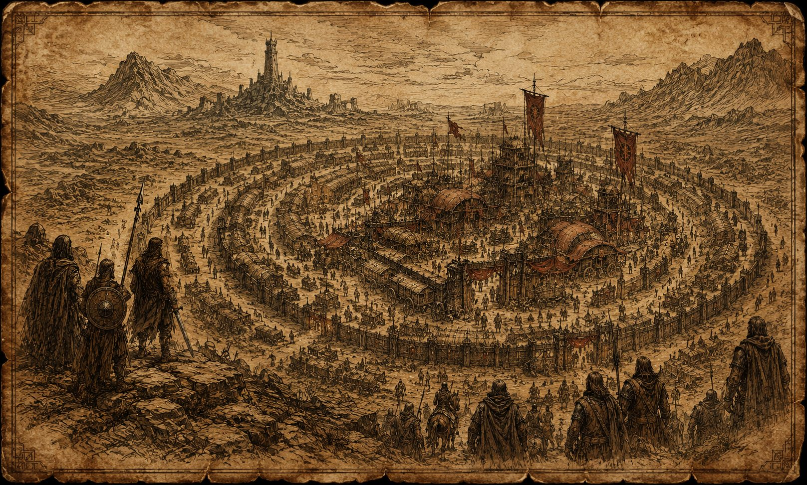

Aquilônia

Resumo
Aquilônia é o centro do Império Aquilônio e a mais poderosa das nações do Oeste hiboriano. Seu nome ainda carrega o peso de Conan, que tomou o trono pela espada, e de Conn, que tentou transformar conquista em ordem duradoura. Suas planícies ferteis, seus rios, suas estradas e sua capital, Tarantia, fazem dela o coração político e econômico do Império.
Mas o coração perdeu o ritmo.
Conn morreu sem sucessor proclamado. O Senado debate, o Conselho dos Anciões aconselha, as casas nobres calculam e as legiões aguardam ordens que talvez não venham. De fora, Aquilônia ainda parece imensa. De dentro, todos sabem que a grandeza imperial repousa sobre equilíbrio fraturado.
Nas fronteiras, os bossonianos mantém a linha contra os Pictos. Em Venarium, Thal-Remmon governa de fato sem ter recebido direito formal. Em Tarantia, cada decisão parece exigir mais tempo do que o mundo está disposto a conceder.
Essência
Aquilônia é lei, trono, estrada e espada. E também atraso, orgulho, memória e medo.
Nenhuma outra nação do Império concentra tanta legitimidade simbólica. Quando um emissário fala "em nome da Aquilônia", não fala apenas por uma terra: fala pela pretensão de que o Oeste hiboriano pode ser organizado, tributado, defendido e julgado por uma ordem comum.
Essa pretensão foi primeiro imposta por Conan e depois institucionalizada por Conn. Conan tornou Aquilônia inevitável; Conn tentou torná-la administrável.
O problema é que a Aquilônia aprendeu a depender de ambos. Primeiro do conquistador, depois do estadista. Agora, sem um e sem o outro, restam as instituições que Conn ergueu: Senado, Conselho dos Anciões, legiões imperiais, Marcas e Warbarons. Elas ainda funcionam. Mas nenhuma delas, isoladamente, é capaz de substituir a Coroa.
Aquilônia não está em ruína. Isso a torna mais perigosa. Ela ainda tem alimento, soldados, ouro, escribas, estradas, templos e autoridade. O que falta é centro incontestável.
Identidade Histórica
A tradição aquilônia se enxerga como culminação civilizada do Oeste. Seus nobres falam de direito, sangue, terras antigas, juramentos e honra de linhagem. Seus oficiais falam de legiões, fronteiras, disciplina e manutenção da ordem. Seus camponeses falam de colheita, tributo, proteção e medo de que as guerras dos grandes cheguem aos campos.
Conan permanece como paradoxo fundador. Foi estrangeiro, bárbaro, usurpador e rei. Sua memória permite que Aquilônia justifique tanto a ordem quanto a violência. Para os tradicionalistas, Conan foi exceção gloriosa, não precedente. Para os Warbarons, foi prova de que a legitimidade pode nascer da espada quando a espada salva o reino. Para o povo, ele e lenda: o homem que podia resolver com presença aquilo que hoje exige três votações e nenhum resultado.
Conn herdou esse problema e tentou resolvê-lo por instituição. Seu reinado transformou a dominação aquilônia em projeto imperial: assentos, pactos, garantias, direito, tributo previsível, integração militar e administração das fronteiras por Marcas. A grande obra de Conn foi fazer com que o Império parecesse mais do que a sombra de seu pai.
Sua morte revelou que a obra ainda não estava completa.
Posição no Império
Aquilônia é o primeiro pilar do Império. Nemédia e o segundo. A tensão entre ambas define grande parte da política senatorial.
Aquilônia oferece centro, coroa, legitimidade histórica, capacidade agrícola, rotas internas e a maioria dos símbolos imperiais. Nemédia oferece memória rival, tradição aristocrática própria, disciplina administrativa, erudição política e uma nobreza que nunca esqueceu ter enfrentado Aquilônia como igual.
No Senado, essa dualidade cria equilíbrio e veneno. Os aquilônios tendem a tratar o Império como extensão natural da Coroa. Os nemédios tendem a tratá-lo como pacto entre potências antigas. Essa diferença parece acadêmica até que se discuta tributo, sucessão, legiões ou direito de nomear Warbarons.
Corinthia, Brythunia e Hyperborea orbitam essa disputa de modos diferentes. Corinthia lucra com a estabilidade e vende saber, ciência e intermediação. Brythunia depende do Império para proteção e rotas, mas teme ser engolida por decisões tomadas longe. Hyperborea integra-se de forma incompleta, observando se a fraqueza aquilônia torna a separação pensável.
Geografia e Fronteiras
No mapa imperial, Aquilônia ocupa o centro-oeste do núcleo. Tarantia fica em posição de convergência, com estradas e rios funcionando como veias políticas e econômicas. Para o oeste e noroeste, as Bossonian Marches formam a fronteira viva contra a Pictish Wilderness. Para o norte, Gunderland e Venarium olham para a Cimmeria e para memórias antigas de guerra. Para o sul, Poitain, Argos e Zingara delimitam áreas de aliança, comércio e atrito. Para o leste, Nemédia e Ophir marcam a transição para o resto do núcleo imperial e para as ameaças do sul.
Rios importantes como o Shirki, o Khorotas, o Tybor, o Thunder e o Black River não são apenas acidentes geográficos. São linhas de abastecimento, fronteiras práticas, rotas de patrulha e argumentos em disputas de jurisdição.
As regiões aquilônias não são homogêneas. Este verbete funciona como matriz do reino; os locais principais aparecem em entradas próprias para facilitar consulta e navegação.
Cidades e regiões centrais
- Tarantia: capital, centro político, sede do Senado, da memória imperial e da paralisia atual.
- Tanasul: cidade de rota e conexão, importante para circulação entre o centro e as regiões de marcha.
- Galparan: ponto interior ligado a rotas entre Gunderland, Tanasul e o coração aquilônio.
- Shamar: marco meridional, próximo a rotas que conectam Aquilônia, Ophir e regiões do sul.
Províncias e fronteiras
- Poitain: província sulista de forte tradição militar e nobreza orgulhosa.
- Gunderland: zona nortista dura, exposta à memória de Venarium e pressão ciméria.
- Bossonian Marches: fronteira cultural e militar, mais modo de vida do que simples província.
- Venarium: fortaleza retomada por Thal-Remmon; hoje símbolo da periferia que age quando o centro hesita.
- Velitrium: bastião bossoniano e guardião prático da fronteira ocidental.
- Karavazyan: cidade-caravana de fronteira entre Venarium, Tanasul e as Marchas; oficialmente ambígua, economicamente indispensável e estrategicamente ligada ao avanço silencioso de Thal-Remmon.
Governo e Estrutura de Poder

Formalmente, Aquilônia e monarquia imperial. Na prática, durante o Ano da Coroa Quebrada, é um sistema de ausência.
A Coroa existe como instituição, mas não como pessoa. O Senado existe como arena de legitimação, mas está dividido. O Conselho dos Anciões existe como fonte de autoridade moral e jurídica, mas não comanda legiões. As legiões imperiais existem, mas apenas cinco respondem diretamente à Coroa. A maior parte da força militar do Império está nas Marcas, sob Warbarons.
Essa arquitetura foi criada para funcionar com um Imperador forte acima dela. Sem esse centro, cada peça interpreta sua função de modo conveniente.
Senado Imperial
O Senado reune nobres das casas tradicionais e delegações proporcionais dos territórios do núcleo imperial. Ali se discutem tributos, campanhas, leis, interpretações de pactos e, inevitavelmente, sucessão.
O Senado não é inútil. Ele é lento. Sua lentidão, que em tempos de paz pode significar prudência, agora parece incapacidade. Blocos aquilônios e nemédios disputam primazia; casas menores vendem apoio; Corinthia calcula; regiões de fronteira exigem urgência.
Conselho dos Anciões
O Conselho dos Anciões e consultivo, jurídico e moral. Seus membros são juristas, sacerdotes, estadistas, veteranos e figuras de prestígio. Não possuem força militar própria, mas sua palavra ainda importa porque oferece legitimidade quando a lei se torna ambígua.
Em uma crise sucessória, o Conselho pode não decidir quem governa, mas pode decidir quem parece legitimo.
Warbarons e Marcas Imperiais
Os Warbarons foram a solução de Conn para absorver senhores de guerra e transformar fronteiras instáveis em domínios militares reconhecidos. Cada Warbaron governa uma Marca Imperial, arrecada tributos, administra justiça local, mantém fortificações e comanda legiões próprias em nome da Coroa.
O título e hereditário, mas não automático. O sucessor deve ser designado e confirmado. Enquanto Conn vivia, essa regra mantinha equilíbrio. Com Conn morto, surge a pergunta que ninguem quer responder: quem confirma o próximo Warbaron?
O caso de Thal-Remmon torna a pergunta concreta. Ele governa Venarium de fato, comanda os Shadow Lions e foi tacitamente aceito por Conn, mas nunca recebeu investidura formal. Se exigir reconhecimento, o Senado terá de escolher entre reconhecer a força que salvou a fronteira ou reafirmar uma lei que talvez já não consiga impor.
Castas, Classes e Sociedade
A sociedade aquilônia e hierárquica, mas não simples.
A nobreza tradicional controla terras antigas, casamentos, tribunais locais e redes senatoriais. Ela se vê como guardiã da civilização. Despreza homens novos quando eles sobem pela espada, mas depende deles quando a fronteira arde.
Os burocratas e juristas de Tarantia formam uma casta menos vistosa e mais resistente. São escribas, magistrados, coletores, intérpretes de pacto, funcionários de arquivo e homens capazes de atrasar uma guerra ao perder uma assinatura.
Os militares se dividem entre legiões imperiais, guarnições de cidade, tropas provinciais, arqueiros bossonianos e companhias de Marca. Entre eles cresce a sensação de que Tarantia debate enquanto outros sangram.
Camponeses, artesãos e arrendatários sustentam o peso real do Império. Para eles, a crise sucessória importa quando muda o imposto, atrasa a escolta, recruta filhos ou permite que bandoleiros cruzem uma estrada antes segura.
Os bossonianos ocupam posição singular. São leais, mas não submissos. Dependem de Aquilônia e a protegem todos os dias. Na fronteira, um arqueiro bossoniano pode respeitar a Coroa e ainda assim desprezar um senador que nunca dormiu ouvindo tambores pictos.
Cultura, Saber e Costumes
A cultura aquilônia valoriza direito, propriedade, linhagem, coragem militar, juramento público e memória de feitos. Sua arquitetura tende a solidez: muralhas, estradas, pontes, foros, torres de vigia, templos de Mitra e salões de audiência.
Em Tarantia, a palavra escrita possui peso quase sagrado. Editos, genealogias, registros de tributo e sentenças moldam a realidade política. Em fronteira, a palavra escrita continua importante, mas precisa ser acompanhada por homens armados.
O aquilônio médio confia em ordem. Isso não significa que ele viva bem. Significa que ele teme o que existe fora dela: floresta picta, feitiçaria estígia, ambição turania, anarquia de mercenários, fome, estrada sem patrulha e nobre sem freio.
Em comparação com Corinthia, Aquilônia é menos curiosa e mais jurídica. Em comparação com Nemédia, e menos memorialista e mais imperial. Em comparação com Bossonia, é mais civil e menos fronteiriça. Essas diferenças devem aparecer em NPCs.
Religião e Cultos
Mitra é o culto público dominante e o principal idioma religioso da legitimidade aquilônia. Seus templos oferecem ordem moral, ritos de juramento, funerais, aconselhamento a nobres e justificativa espiritual para a autoridade civilizada.
A religião mitraica, contudo, não é monolítica. Em Tarantia, pode ser institucional, cerimonial e próxima da lei. Nas Marchas, tende a ser mais austera, funerária e ligada a dever. Entre soldados, Mitra é invocado menos como consolo e mais como testemunha: que veja quem manteve a linha e quem fugiu.
Cultos estrangeiros existem, mas são vigiados. Asuranos podem ser mal compreendidos. Devotos de Ishtar ou deuses shemitas podem aparecer em bairros mercantis. Qualquer sinal de Set gera medo, repressão ou manipulação política.
Para o Mestre, a crise atual e terreno fertil para cultos ocultos. Quando o centro falha, homens buscam presságios. Quando a lei demora, deuses menores oferecem respostas rápidas demais.
Economia e Recursos
Aquilônia vive de terra, rios, estrada e tributo.
Suas planícies e vales produzem grãos, vinho, gado, madeira, couro e excedente alimentar. Isso sustenta cidades, legiões e burocracia. O Império não seria possível sem essa base material. Tarantia pode falar em destino, mas destino também precisa de celeiros.
As estradas aquilônias são instrumento de poder. Elas movem mercadores, mensageiros, legiões, cobradores e rumores. Onde a estrada é segura, a Coroa parece presente. Onde a estrada falha, surgem Karavazyan, escoltas privadas, bandoleiros, cobranças locais e dependências novas.
A crise sucessória afeta a economia por incerteza. Não é preciso guerra aberta para ferir o comércio: basta que comerciantes não saibam quem garante um contrato, que Warbarons cobrem taxa dupla, que senadores travem verba de guarnição ou que um comboio precise escolher entre passar por Velitrium ou contratar Shadow Lions.
Forças Militares
Aquilônia ainda é militarmente poderosa. Esse é o perigo.
A Coroa mantém cinco legiões imperiais diretamente subordinadas à autoridade central. Elas são símbolo e reserva. Sua movimentação, no entanto, tornou-se politicamente sensível: quem ordena? Em nome de quem marcham? Contra quem podem ser usadas sem parecer golpe?
As demais forças estão espalhadas pelas Marcas Imperiais. Na prática, isso significa que a defesa do Império depende de senhores de fronteira com interesses próprios. Em paz, isso é eficiência regional. Em crise, e fragmentação armada.
Os bossonianos são essenciais para a fronteira oeste. Seus arqueiros, trilheiros e guarnições conhecem a Wilderness melhor do que qualquer oficial de salão. Velitrium representa essa cultura em sua forma mais rígida: dever, disciplina, arco, vigília.
Venarium representa outra possibilidade: a fronteira reorganizada por um líder carismático e por uma companhia que responde a ele antes de responder ao Senado.
Relações Externas
Nemédia
Nemédia e parceira e rival. Integra o núcleo imperial, ocupa posição central no Senado e conserva memória de igualdade antiga. Aquilônia precisa dela para sustentar o Império, mas teme que a crise sucessória permita a Nemédia redefinir o pacto em seus termos.
Corinthia
Corinthia funciona como centro cultural, científico e diplomático. Aquilônia tende a valorizar sua utilidade e desconfiar de sua liberdade intelectual. Em tempos de crise, saber corinthio pode salvar o Império ou fornecer argumentos para seus inimigos.
Brythunia
Brythunia é zona de articulação e dependência. Para Aquilônia, é parte do corpo imperial; para muitos brythunios, isso pode significar proteção ou absorção. A relação deve ser escrita como negociação continua, não como posse pacífica.
Hyperborea
Hyperborea integra formalmente o Império de modo recente e incompleto. Aquilônia precisa demonstrar força sem provocar ruptura. Se Tarantia parecer fraca, o silencio hyperbóreo pode virar cálculo separatista.
Ophir
Ophir e aliado crucial e anteparo contra Stygia. Sua riqueza e posição estratégica fazem dele parceiro indispensável. Se Ophir cair ou mudar de alinhamento, Aquilônia sente antes que o resto do Império compreenda.
Bossonian Marches
As Marches são parte de Aquilônia, mas também um mundo próprio. A lealdade bossoniana nasce de utilidade, tradição e dever, não de docilidade. Se Tarantia abandonar a fronteira, os bossonianos farao o necessário para sobreviver.
Tensões Atuais
Coroa vacante
Conn morreu há dois anos. O trono permanece vazio. A sucessão, evitada nos últimos anos de sua vida, tornou-se agora o buraco no centro da lei.
Senado paralisado
O Senado vota, adia, interpreta e bloqueia. Cada facção teme que uma decisão apressada entregue o Império a um rival. Essa prudência já se confunde com covardia.
Warbarons sem árbitro
Os Warbarons foram criados para defender fronteiras. Agora possuem força militar suficiente para constranger o centro. Sem Imperador, o mecanismo de sucessão e confirmação tornou-se vulnerável.
Thal-Remmon
Thal-Remmon é o problema que ganhou rosto. Bastardo, comandante, vencedor em Venarium, senhor de fato e não de direito. Se for reconhecido, abre precedente. Se for rejeitado, pode tornar-se bandeira para todos que creem que a fronteira vale mais do que o Senado.
Velitrium
Velitrium permanece estável enquanto Edran Verden vive. A sucessão entre Caelan e Maeryn, a rigidez tradicional da cidade e o plano de longo prazo de Thal-Remmon tornam a fortaleza uma chave estratégica.
Karavazyan
Karavazyan cresce como instrumento sem estandarte. Ela move comércio, rumor, escolta e influência pelas rotas onde a autoridade formal é lenta. O Senado mal percebe; Venarium percebe; Velitrium observa.
Kuth
Kuth ainda não é uma questão pública. Isso é parte do perigo. Enquanto a política explica tudo como sonho, superstição, histeria ou culto menor, algo mais antigo encontra espaço nas fissuras.
Personalidades Públicas do Centro Imperial
Aquilônia não é governada por uma única vontade. O Trono Vazio continua sendo o símbolo da soberania, mas o poder real se distribui entre Senado, Conselho dos Anciões, casas nobres, comando das legiões, templos de Mitra, Warbarons e burocratas de Tarantia. Essas figuras representam as classes que sustentam ou corroem o centro imperial.
- Dama Aemilia Valens: senadora aquiloniana e matriarca de uma casa antiga; defende precedência nobre e continuidade da ordem pos-Conn.
- Marcus Valerius Corda: chanceler-arquivista do Senado; conhece decretos, genealogias e lacunas legais capazes de elevar ou destruir pretendentes.
- General Othmar de Tanasul: oficial de carreira ligado as rotas militares do centro-norte; visto como soldado institucional, não como homem de facção.
- Bispo Caldus Meroven: voz mitraica de grande audiência em Tarantia; traduz crise política em linguagem de dever, culpa e expiação pública.
- Lysandra de Poitain: cavaleira-diplomata de uma casa meridional; representa a honra aristocrática que ainda quer salvar Aquilônia de sua própria burocracia.
NPCs e Facções Relevantes
Instituições
- Senado Imperial: arena de disputa entre casas, nações do núcleo e interesses de sucessão.
- Conselho dos Anciões: fonte de legitimidade jurídica e moral, especialmente perigosa se dividida.
- Legiões Imperiais da Coroa: cinco legiões centrais cuja movimentação pode definir a crise.
- Warbarons: senhores de Marcas Imperiais, defensores necessários e ameaça estrutural.
- Templos de Mitra: autoridade religiosa, social e legal.
Figuras e eixos já ativos
- Thal-Remmon: senhor de fato de Venarium, comandante dos Shadow Lions, possível ponto de ruptura do sistema.
- Edran Verden: Warbaron de Velitrium, tradicionalista e defensor prático das Marchas.
- Caelan Verden: herdeiro designado, honrado e rígido.
- Maeryn Verden: estrategista excluida da sucessão formal por tradição.
- Shadow Lions: companhia que transforma reputação militar em poder político.
- Karavazyan: cidade móvel e ferramenta de influência sem assumir forma de conquista.
- Voidwatchers: seita ou rede de observadores de sonhos, relevantes onde Kuth toca a realidade.
Tarantia

Resumo
Tarantia é a capital de Aquilônia e, no período atual da campanha, o lugar onde o Império Aquiloniano tenta convencer a si mesmo de que ainda e eterno. A cidade concentra o palácio, o Senado, as grandes casas nobres, templos de Mitra, cartórios, tribunais, academias militares, mercados de longa distância e embaixadas das nações submetidas ou associadas ao Império.
Vista de longe, Tarantia é uma cidade de torres azuis e douradas, muralhas sólidas e pontes sobre o rio Khorotas. Vista por dentro, é um organismo de pedra, protocolo, ambição e medo: cada portão sabe quem entra, cada salão sabe quem deve esperar, cada rua sabe que uniforme deve obedecer.
Identidade
Tarantia é menos uma cidade do que uma afirmação política. Ela diz ao mundo que Aquilônia e a flor do Ocidente hiboriano: rica, militarmente organizada, juridicamente sofisticada e convencida de sua superioridade. Essa imagem, porém, depende de uma coreografia constante. O luxo dos palácios precisa esconder a exaustão fiscal das campanhas de fronteira; a retórica da unidade precisa esconder a rivalidade entre velhas famílias; os templos precisam transformar conquista em missão civilizatória.
A cidade é feita de contrastes fortes:
- a monumentalidade do palácio contra os becos de serviço;
- a solenidade mitraica contra cultos privados de nobres ansiosos;
- a disciplina da guarda contra a corrupção dos inspetores de bairro;
- a grandeza imperial contra a memória incômoda de Conan, o estrangeiro que um dia reinou ali.
Geografia Urbana

Tarantia se organiza em torno do Khorotas, das muralhas internas e das vias cerimoniais que conduzem ao palácio. A topografia política e tão importante quanto a física: quanto mais alto, mais perto do poder; quanto mais perto das pontes e docas, mais misturado e perigoso se torna o fluxo social.
Distritos Principais
- Palácio e Altas Cortes: centro do poder formal; audiências, arquivos dinásticos, conselhos militares e recepções senatoriais.
- Bairro Senatorial: mansões, casas de patronato, salas de reunião privadas e corredores onde acordos reais são fechados antes das votações.
- Templos de Mitra: núcleo ritual da cidade, usado para coroações, penitências públicas e legitimação de campanhas militares.
- Mercados do Khorotas: área de comerciantes, cambistas, caravaneiros, agentes estrangeiros e rumores vindos de toda a Era Hiboriana.
- Quartel da Guarda Real: força de ordem urbana e símbolo da continuidade aquiloniana após a queda da velha monarquia conaniana.
- Subterrâneos e Catacumbas: ruínas, necrópoles e passagens esquecidas sob a cidade oficial. Ótimas para segredos, perseguições, cultos e provas de que Tarantia foi erguida sobre camadas anteriores de poder.
Governo e Poder
No cenário de Conan Legacy, Tarantia é a sede prática do Trono Vazio. O rei morto ainda governa por memória, estátua, lei e medo. Nenhuma facção quer parecer traidora da ordem que herdou, mas todas tentam moldar essa ordem para seus interesses.
Forças centrais:
- Senado Imperial: arena de disputa entre Aquilônios, Nemédios e casas associadas. Tarantia e seu teatro principal.
- Nobreza Aquiloniana: defende precedência histórica, linhagem e direito de mando.
- Delegações Nemédias: pressionam por racionalização administrativa, codificação legal e maior participação no eixo imperial.
- Sacerdócio de Mitra: sustenta a linguagem moral do poder, mas não é monolítico.
- Warbarons e generais: homens que controlam soldados e estradas, muitas vezes mais decisivos que juristas.
- Casa de Thal-Remmon: influência crescente, baseada em disciplina militar, controle de informação e legitimidade de fronteira.
Cultura e Vida Cotidiana

A vida cotidiana tarantina e formal, hierárquica e teatral. A posição social aparece na roupa, na forma de falar, no direito de portar armas, no acesso a banhos, bibliotecas, jardins e tribunais. Mesmo comerciantes ricos precisam de patronos; mesmo nobres antigos precisam parecer úteis ao Império.
Tarantia também é uma cidade de espetáculo: procissões, julgamentos públicos, torneios, funerais de Estado, embaixadas estrangeiras, debates senatoriais e execuções exemplares. O povo aprende política como quem aprende clima: observando bandeiras, rumores, preços de grão e movimentação de tropas.
Economia
A cidade vive de impostos, comércio fluvial, contratos militares, artesanato de luxo, escribas, oficinas de armas, serviços burocráticos e consumo aristocrático. Tarantia não produz tudo que come; ela comanda redes que fazem comida, madeira, metal, cavalos, vinho, livros, pedra e homens armados chegarem até ela.
Isso cria vulnerabilidades dramáticas:
- bloqueios no Khorotas afetam preços e humor popular;
- sabotagem de arquivos pode paralisar decisões imperiais;
- caravanas atacadas nas fronteiras viram crise política no Senado;
- fome urbana transforma doutrina imperial em cinismo.
Forças Militares
Tarantia concentra tropas cerimoniais, guarda palaciana, destacamentos senatoriais, companhias de elite e oficiais vindos de regiões subordinadas. A cidade e protegida por muralhas, vigilância, patrulhas e uma cultura militar antiga.
Para jogo, ela funciona como lugar onde violência é possível, mas nunca simples. Uma briga de rua pode virar caso de jurisdição; um duelo pode ter consequências senatoriais; uma prisão pode ser ritualizada como mensagem pública.
Tensões de Campanha
- A capital precisa parecer unida, mas a rivalidade Aquilônia-Nemédia se infiltra em cada instituição.
- A memória de Conan e disputada: rei bárbaro, libertador, usurpador ou fundador involuntário da ordem atual?
- O Senado usa a fronteira como argumento, mas raramente paga o custo humano dela.
- Tarantia depende de lugares que despreza: Bossonian Marches, Gunderland, Velitrium e Karavazyan.
- O excesso de protocolo abre espaço para conspiradores que conhecem as brechas.
Estrutura de Poder e Personalidades
Tarantia é governada por sobreposição de autoridades. O Senado é o grande palco público, mas a cidade também responde ao palácio, a guarda, aos magistrados urbanos, aos templos de Mitra e as casas nobres que controlam bairros, clientelas e contratos. Não há um simples prefeito capaz de decidir tudo; há um Prefeito das Chaves, responsável por portões, ordem urbana e circulação, mas sua autoridade depende de quem assina a ordem e de quem está disposto a executá-la.
Personalidades Públicas
- Senador Publius Aranor: nobre aquiloniano de voz calma e memória cruel; preside comissões sobre sucessão, tributos e prerrogativas das casas antigas.
- Dama Octavia Belcanto: patrona de salões, poetas, espiões elegantes e casamentos políticos; conhece a reputação de quase todos antes que eles entrem em seu salão.
- Capitão Arvus Celer: oficial da Guarda Real, responsável por portões internos e prisões de alta visibilidade; respeitado por soldados e odiado por quem tenta comprar passagem.
- Selene Vardossa: cambista e mediadora dos mercados do Khorotas; sua casa de letras de crédito financia caravanas, resgates e campanhas discretas.
- Frei Malthus de Mitra: pregador urbano austero, popular entre veteranos e pobres; sua palavra pode transformar crise política em dever religioso.
Tanasul

Resumo
Tanasul é uma cidade de passagem, registro e pressão. Localizada no centro-norte aquiloniano, funciona como ponto de conexão entre Tarantia, Galparan, Gunderland, Bossonian Marches e as rotas que seguem para a fronteira. Quem controla Tanasul não controla a glória do Império; controla seu movimento.
A cidade é feita de armazéns, postos de pedágio, pontes, estalagens, pátios de tropa, escribas cansados e oficiais que sabem que uma ordem atrasada pode matar uma guarnição distante.
Identidade
Tanasul não é cantada como Poitain, temida como Venarium ou admirada como Tarantia. Ainda assim, é essencial. Ela representa o Império como máquina: listas, selos, carroças, cavalos de troca, mapas, cartas, suprimentos, convocações e soldados indo para lugares que os senadores raramente visitam.
Sua cultura urbana valoriza eficiência, memória administrativa e pragmatismo. Os moradores aprenderam a ouvir sotaques e identificar problemas pelo tipo de poeira nas botas.
Geografia

No mapa do Império, Tanasul aparece como um no entre regiões centrais e setentrionais. Para campanha, deve ser tratada como cidade de estradas e travessias, próxima o bastante do coração aquiloniano para receber burocracia, mas perto o bastante da fronteira para sentir sua ansiedade.
Elementos de cena:
- portões com filas de carroças;
- pátios de muda de cavalos;
- escritórios de licença e selagem;
- armazéns imperiais;
- tavernas de tropeiros e oficiais;
- bairro de escribas, contadores e mensageiros;
- ponte ou passagem cujo controle tem valor militar.
Governo Local
Tanasul é governada por uma combinação de magistrados, oficiais de logística, nobres locais e representantes comerciais. A cidade é muito sensível à jurisdição: quem tem autoridade sobre uma carga militar? Quem julga um crime cometido por soldado em transito? Quem paga quando uma ponte cai?
Essa ambiguidade cria aventura.
Economia
A riqueza de Tanasul vem de movimento. Hospedagem, ferraria, conserto de rodas, selaria, grão, contabilidade, letras de crédito, troca de cavalos, guarda privada e armazenamento de carga sustentam a cidade.
Em tempos de crise, Tanasul se torna alvo perfeito para sabotagem. Queimar um armazém ali pode ser mais eficaz do que vencer uma batalha na fronteira.
Tensões de Campanha
- Comerciantes querem livre circulação; militares querem prioridade absoluta.
- Nobres locais lucram com pedágios e resistem a reformas senatoriais.
- Agentes nemédios podem tentar reorganizar a cidade segundo padrões legais mais rígidos.
- Thal-Remmon precisa de Tanasul para mover homens e suprimentos.
- A população se sente explorada por uma guerra que raramente chega as muralhas, mas sempre passa por seus impostos.
Estrutura de Poder e Personalidades
Tanasul e administrada por um governador-magistrado nomeado por Tarantia, mas a vida real da cidade passa por oficiais de estrada, mestres de armazém, guildas de carroceiros e famílias que controlam pontes e hospedarias há gerações. O poder local e burocrático, militar e comercial ao mesmo tempo: quem controla registro, passagem e estoque controla a cidade.
Personalidades Públicas
- Dorian Pell: governador-magistrado de Tanasul; um homem de selos, mapas e procedimentos, convencido de que a ordem imperial depende de papel bem escrito.
- Capitã Ysabet Maro: comandante da guarda de estrada; antiga escolta de comboios, respeitada pelos patrulheiros e pouco impressionada por nobres de passagem.
- Hadrus Vell: mestre dos armazéns imperiais; sabe onde está cada saco de grão, cada caixa de flechas e cada mentira nos inventários.
- Oren Tal: correio-chefe da cidade; coordena cavaleiros, mensageiros e rotas de urgência entre Tarantia, Galparan e Velitrium.
- Mira das Sete Contas: cambista, contrabandista ocasional e solucionadora de problemas; todos negam conhecê-la até precisarem dela.
Galparan

Resumo
Galparan é uma cidade de interior aquiloniano, importante menos pelo brilho e mais pela estabilidade. Campos, armazéns, postos de recrutamento, pequenas casas nobres e administradores imperiais fazem dela um amortecedor entre Tarantia, Tanasul, Gunderland e as regiões de fronteira.
Se Tanasul move o Império, Galparan o alimenta.
Identidade
Galparan representa a Aquilônia ordinária que sustenta a grandeza imperial. Não é capital, não é lenda de fronteira, não é corte cavaleiresca: é uma cidade de celeiros, impostos, milícia, pequenas ambições e medo de ser esquecida até o momento em que todos precisam dela.
Sua importância aumenta em campanhas prolongadas. Quando o Império precisa manter guarnições no oeste e no norte, Galparan vira ponto de coleta, triagem, armazenamento e recrutamento. Isso gera riqueza, mas também ressentimento.
Geografia
Galparan fica em área de transição do centro-norte aquiloniano. A região ao redor deve ser imaginada como mosaico de campos, pastagens, bosques, estradas secundarias, pequenas torres e vilas tributárias.
Elementos de cena:
- celeiros comunitários e armazéns imperiais;
- praça de mercado de grãos e gado;
- quartel de milícia;
- casas de pequenos nobres;
- capela de Mitra com forte papel comunitário;
- escritório de coleta fiscal;
- cemitério de veteranos e mortos de fome antiga.
Governo Local
Galparan é governada por magistrados, famílias proprietárias e representantes fiscais. Seu poder é menos teatral que o de Tarantia, mas muito mais próximo da vida comum. Um imposto novo, uma requisição de cavalos ou um atraso no pagamento de soldados pode mudar o clima da cidade em poucos dias.
Conflitos locais:
- proprietários contra arrendatários;
- coletores imperiais contra aldeias endividadas;
- veteranos contra oficiais que prometem compensações;
- comerciantes de grão contra requisições militares;
- jovens recrutados contra famílias que precisam deles no campo.
Economia
Galparan vive de grãos, gado, farinha, couro, carroças, pequenas forjas, armazenamento e administração rural. Em paz, e prospera de modo discreto. Em guerra, e espremida: quanto mais o Império exige, mais a cidade percebe que sua lealdade virou recurso.
Cultura
A cultura local valoriza previsibilidade, respeito familiar, reputação de trabalho e proteção comunitária. Pessoas de Galparan desconfiam de aventureiros brilhantes, mas respeitam quem resolve problemas concretos: recuperar gado, proteger colheita, impedir abuso fiscal, trazer alguem vivo de uma estrada perigosa.
Tensões de Campanha

- Galparan pode virar palco de revolta fiscal se Tarantia exagerar nas requisições.
- Thal-Remmon precisa do abastecimento local para sustentar operações no oeste.
- A cidade teme ataques indiretos: sabotagem, praga em celeiros, incêndio, envenenamento de poços.
- Nobres menores sonham em usar a crise imperial para ascender.
- Agentes externos podem manipular fome e abastecimento para produzir caos político.
Estrutura de Poder e Personalidades
Galparan é governada por uma alcaide local sob supervisão fiscal aquiloniana, mas os verdadeiros poderes são os celeiros, as famílias proprietárias, a capela de Mitra e a milícia rural. A cidade não tem uma corte brilhante; tem conselhos de colheita, audiências de imposto e reuniões em que uma carroça atrasada pesa mais que um discurso.
Personalidades Públicas
- Corenna Mavul: alcaide de Galparan; pragmática, cansada e popular porque costuma resolver problemas antes que virem decreto.
- Barão Ercio Valdan: maior proprietário rural da região; cortês em público, implacável quando seus campos ou vassalos são ameaçados.
- Bastian Grol: mestre-celeireiro dos armazéns imperiais; conhece fome, fraude e preços melhor que qualquer senador.
- Irma Halda de Mitra: sacerdotisa comunitária, mediadora de disputas rurais e guardiã de registros de nascimento, morte e juramento.
- Saro Trigo-Negro: comprador de grãos sem perguntas, meio comerciante, meio criminoso; aparece sempre que há excedente escondido ou miséria demais.
Shamar

Resumo
Shamar é uma cidade antiga do sul de Aquilônia, associada ao rio Tybor e as rotas que encostam em Ophir, Koth e nas disputas meridionais do Império. Em Tarantia, ela costuma ser descrita como uma cidade provincial. Em Shamar, essa palavra e recebida como insulto.
A cidade guarda pedra velha, linhagens teimosas e uma cultura de resistência. Quem domina Shamar controla uma porta para o sul; quem subestima Shamar costuma descobrir tarde demais que suas muralhas, suas famílias e sua memória foram feitas para sobreviver a invasores.
Identidade
Shamar é o sul aquiloniano em sua forma mais dura: aristocrática, armada, devota a tradições locais e desconfiada de qualquer decreto vindo da capital. Sua identidade combina orgulho urbano, memória rural e uma espécie de paciência agressiva. Ela pode se dobrar diante de Tarantia, mas dificilmente se entrega a ela por inteiro.
A cidade é lembrada em tradições externas como alvo de campanhas de Ophir e Koth. Para Conan Legacy, isso a torna um lugar marcado por tentativas de ocupação, pactos defensivos, famílias que lucraram com guerras e ruínas que ainda funcionam como monumentos políticos.
Geografia e Posição
Shamar ocupa uma posição estratégica na interface entre o interior aquiloniano e o corredor sul. O rio Tybor permite movimento, comércio e guerra. Estradas secundarias levam a propriedades nobres, fortes menores, vinhedos, campos de criação e postos de cobrança.
A paisagem ao redor é menos civilizada do que a propaganda tarantina sugere. Entre colinas, pontes antigas e vilas fortificadas, há espaço para contrabandistas, desertores, agentes ophirianos, sacerdotes itinerantes e pequenas casas nobres que ainda se comportam como reinos privados.
Governo Local
Shamar tende a ser governada por uma aristocracia ducal ou senhorial forte, apoiada por capitães locais, escribas de linhagem e milícias urbanas. A capital exige impostos e lealdade; Shamar exige respeito e autonomia prática.
Conflitos internos comuns:
- casas antigas contra administradores imperiais;
- oficiais tarantinos contra comandantes locais;
- comerciantes do rio contra latifundiários;
- linhagens que defendem guerra preventiva contra Ophir contra famílias que enriquecem com comércio de fronteira.
Cultura

Shamar valoriza juramentos, funerais, genealogias, memória de cerco e hospitalidade seletiva. A palavra dada por uma casa antiga pesa mais que documentos recentes do Senado. Banquetes locais misturam cortesia e ameaça: quem entende os brindes, entende a política.
As ruas preservam santuários, marcos de guerra e casas com pedras reaproveitadas de estruturas anteriores. A cidade parece dizer que nada desaparece de verdade; muda de dono, muda de nome, mas continua ali.
Economia
A economia de Shamar combina agricultura, pedágios fluviais, cavalos, oficinas de reparo militar, vinho, couro, guarda de mercadorias e serviços para companhias em marcha. Em tempos de tensão com Ophir ou Koth, a cidade prospera e sofre ao mesmo tempo: o dinheiro militar entra, mas também chegam refugiados, requisições e espionagem.
Estrutura de Poder e Personalidades
Shamar é uma cidade ducal: seu governo formal pertence a uma casa nobre antiga, cercada por capitães urbanos, magistrados de rio, famílias mercantis e sacerdotes. O duque governa, mas só permanece forte enquanto consegue equilibrar honra local, defesa militar e comércio com vizinhos que a cidade deveria desconfiar.
Personalidades Públicas
- Duque Sestus Valcor: senhor de Shamar; orgulhoso, cerimonial e obcecado por preservar a autonomia local diante de Tarantia.
- Capitã Leona Thyr: comandante da guarda dos portões; veterana de campanhas meridionais, prefere muralhas bem guarnecidas a discursos nobres.
- Varo Dumesnil: magistrado do rio Tybor; controla licenças, barcaças, pedágios e disputas comerciais.
- Dama Saphira el-Ophiri: mercadora de origem ophiriana aceita pela elite local, mas observada por todos em tempos de tensão.
- Tullio dos Marcos Antigos: cronista, antiquário e guia de ruínas; sabe demais sobre pedras que precedem as casas atuais.
Poitain

Resumo
Poitain é a província meridional mais rica e celebrada de Aquilônia: uma terra de campos abertos, jardins, pomares, vinhos, castelos brancos, senhores orgulhosos e cavaleiros que se veem como a flor marcial do reino. Se Tarantia é a cabeça política de Aquilônia, Poitain e sua imagem idealizada de nobreza: honra, linhagem, cavalos, música, violência elegante e obediência seletiva.
Identidade
Poitain vive de uma contradição produtiva. Ela é profundamente aquiloniana, mas se considera especial dentro da Aquilônia. Seus nobres defendem o Império porque acreditam que sem eles o Império seria menos belo, menos nobre e menos digno de obediência.
Na tradição hiboriana, Poitain e associada a riqueza rural, jardins, planícies onduladas e uma cultura cavaleiresca vigorosa. Em Conan Legacy, essa imagem e preservada, mas tensionada: a província precisa decidir se sua honra serve ao Trono Vazio, ao Senado, a Tarantia, à própria Poitain ou a uma ideia romântica de Aquilônia que talvez já não exista.
Geografia
Poitain é uma terra de clima mais ameno e luminoso, com prados, bosques cuidados, vinhedos, pomares, pequenas cidades muradas e propriedades senhoriais. As estradas são melhores que em muitas regiões do norte, mas isso também significa que exércitos e cobradores chegam mais rápido.
A paisagem e bonita demais para ser inocente. Cada ponte tem dono, cada vinhedo tem história, cada castelo guarda aliados, refens, capelas e armas.
Sociedade e Governo
A província é marcada por casas nobres fortes, relações de vassalagem, cultura de torneio e um ideal de cavalaria que serve tanto para inspirar quanto para encobrir brutalidade. A honra poitaniana pode proteger camponeses contra abusos externos; também pode justificar vinganças privadas que atravessam gerações.
Forças sociais:
- grandes casas cavaleirescas, zelosas de seus brasões;
- capelas mitraicas rurais, ligadas a patronos locais;
- ordens de cavalaria, algumas sinceras, outras políticas;
- vilas produtoras, que sustentam o luxo nobre;
- bardos e genealogistas, responsáveis por transformar violência em tradição.
Economia
Poitain exporta grãos, vinho, cavalos, frutas, couro, madeira trabalhada, tecidos finos e homens treinados para guerra montada. A riqueza vem do campo, mas a reputação vem da cavalaria.
O Senado depende de Poitain para prestígio e força militar. Poitain depende do Senado para acesso a cargos, rotas e reconhecimento imperial. Essa dependência reciproca e cheia de ressentimento.
Forças Militares

Poitain e ideal para representar a cavalaria pesada e aristocrática de Aquilônia. Seus cavaleiros são disciplinados, orgulhosos e perigosos em campo aberto. Também podem ser péssimos em guerras de floresta, pântano ou emboscada, o que cria contraste com Bossonianos, Gundermen e fronteiriços.
Em mesa, um cavaleiro de Poitain deve carregar tanto esplendor quanto problema: juramentos, patronos, duelos, manutenção cara, reputação e inimigos hereditários.
Tensões de Campanha
- Poitain quer preservar a nobreza aquiloniana contra a tecnocracia cultural de Corinthia e o legalismo nemédio.
- Seus cavaleiros podem ver Thal-Remmon como homem necessário ou como militar sem graca cortesã.
- Casas menores ressentem a riqueza dos grandes senhores.
- Camponeses e servos pagam o custo de um ideal cavaleiresco que fala pouco deles.
- A província pode se tornar fiel sustentáculo do Império ou berço de uma reação aristocrática.
Estrutura de Poder e Personalidades
Poitain é governada por condes, barões e casas cavaleirescas que reconhecem Aquilônia, mas preservam forte autonomia de costume. O poder local se organiza em torno de castelos, juramentos de vassalagem, ordens de cavalaria, capelas rurais e famílias que tratam honra como moeda política.
Personalidades Públicas
- Conde Armand de Pellia: senhor poitaniano de grande prestígio, anfitrião de torneios e defensor público da velha nobreza aquiloniana.
- Dama Ysoria de Montclair: patrona de música, casamentos e alianças; sua cortesia costuma anteceder movimentos políticos precisos.
- Sir Dacien Valemont: campeao de torneio e comandante de cavalaria; admirado por jovens nobres e temido por rivais que conhecem seu orgulho.
- Lucan Floril: mestre vinicultor e comerciante de luxo; suas adegas recebem mais confidencias que muitos confessionários.
- Prior Aurel de Mitra: sacerdote rural influente, defensor da honra cavaleiresca como dever religioso.
Gunderland

Resumo
Gunderland é a província setentrional de Aquilônia: uma terra de colinas, bosques ralos, vilas duras, homens altos, lanças compridas e orgulho seco. Os Gundermen são famosos como infantaria pesada, guardas e mercenários. Eles se consideram Aquilônios por pacto e conveniência histórica, mas não necessariamente por submissão espiritual.
Para Tarantia, Gunderland é uma muralha humana. Para Gunderland, Tarantia e uma cidade rica que costuma esquecer quem segura o norte quando os bárbaros descem.
Identidade
Gunderland preserva uma identidade hiboriana arcaica e conservadora. Fontes públicas costumam descrevê-la como menos cosmopolita que Aquilônia central, mais rude, mais antiga em costumes e menos afeita ao refinamento cortesão. Em Conan Legacy, isso se traduz em uma província que participa do Império sem dissolver sua própria memória.
Há algo quase contratual na lealdade gundermen: eles cumprem juramentos, mas cobram respeito. Se Tarantia tenta tratar Gunderland como uma mera reserva de soldados, abre espaço para ressentimento, motins de baixa intensidade e líderes locais que falam em recuperar prerrogativas antigas.
Geografia
Gunderland é uma região de colinas, vales frios, matas esparsas, pedreiras, aldeias fortificadas e estradas que ficam piores no inverno. Sua posição ao norte a transforma em amortecedor contra pressões vindas de Cimmeria, Border Kingdom e zonas montanhosas.
A paisagem favorece infantaria disciplinada, emboscadas em passos estreitos e fortalezas pequenas, pouco glamourosas, mas extremamente difíceis de tomar sem custo alto.
Sociedade

A sociedade gundermen e austera, comunitária e hierárquica de forma diferente da aristocracia tarantina. Linhagem importa, mas utilidade militar e reputação pessoal importam quase tanto. Um homem incapaz de ficar na linha de escudos dificilmente conserva respeito apenas por brasão.
Elementos sociais:
- aldeias fortificadas, muitas vezes organizadas em torno de salões comunais;
- clãs e casas antigas, menos ornamentais que os nobres do sul;
- capelas de Mitra, as vezes sobrepostas a costumes religiosos anteriores;
- forjas e pedreiras, base econômica e simbólica;
- companhias de lanceiros, que funcionam como instituição de honra local.
Religião e Memória
Tradições externas indicam que Gunderland teria preservado cultos ou referencias anteriores a Mitra antes da integração aquiloniana. Para Conan Legacy, isso permite uma tensão interessante: oficialmente Mitra ordena a província; informalmente, famílias e vilas ainda mantém juramentos, nomes e rituais antigos que a capital tolera enquanto os impostos e soldados chegam.
Economia
Gunderland exporta ferro, pedra, madeira, pele, soldados e disciplina. A província não é pobre, mas sua riqueza aparece pouco em luxo. Ela se manifesta em armas boas, muralhas bem mantidas, celeiros, cavalos resistentes e famílias capazes de suportar campanhas longas.
Forças Militares
Os Gundermen são uma das melhores infantarias do Ocidente hiboriano: lanceiros, piqueiros, guardas de elite, homens de linha capazes de sustentar o choque enquanto cavaleiros ou arqueiros trabalham nos flancos.
Em SWADE, Gunderland sugere Extras e Wild Cards com Vigor alto, Fighting disciplinado, formações defensivas, Edges de Soldado/Comando e desvantagens ligadas a teimosia, conservadorismo e orgulho provincial.
Tensões de Campanha
- Gunderland não aceita facilmente ordens de oficiais que nunca defenderam uma passagem no inverno.
- A província pode se alinhar a Thal-Remmon por respeito militar, mas desconfiar de seu projeto centralizador.
- Velhas práticas religiosas podem virar pretexto para intervenção mitraica.
- Jovens gundermen voltam de guerras imperiais com ideias perigosas.
- Casas tarantinas tentam comprar regimentos; líderes locais chamam isso de corrupção estrangeira.
Estrutura de Poder e Personalidades
Gunderland reconhece a autoridade aquiloniana, mas seu poder local passa por chefes de casa, mestres de lança, conselhos de aldeia, capelas austeras e companhias de infantaria. O governador formal precisa negociar com líderes que valorizam juramento antigo mais do que elegância cortesã.
Personalidades Públicas
- Hadrik Tor: Mestre das Lanças de Gunderland; comandante respeitado por sua disciplina e por jamais pedir de um soldado algo que não faria.
- Brenna Halvorn: senhora de uma casa antiga; fala pouco, paga em dia e lembra a Tarantia que pacto não é servidão.
- Odo Gremmel: capitão de uma companhia gundermen contratada como guarda; profissional, direto e difícil de subornar.
- Madre Elswyth: sacerdotisa de Mitra que conhece velhos costumes locais e prefere acomodar tradições a criar mártires.
- Frida Pedra-Fria: mestra ferreira e proprietária de forja; suas lanças equipam homens que nunca pisaram em um salão nobre.
Bossonian Marches

Resumo
As Bossonian Marches são a grande fronteira ocidental de Aquilônia, entre os rios Black e Thunder e a Pictish Wilderness. São terras de aldeias muradas, campos trabalhados sob ameaça, arqueiros famosos, patrulhas tensas e memória de sangue. Para a capital, elas são o escudo do reino. Para quem vive ali, são casa, túmulo e disputa permanente.
No cenário atual, as Marches também são uma ferida política: os Lordes Bossonianos, linhagem local misturada com Aquilônios e Cimérios, tentam consolidar domínio e integrar plenamente a região ao Império. Contra eles, tribos e comunidades que se chamam Povos da Terra reivindicam ancestralidade picta e direito anterior ao solo.
Identidade
A tradição hiboriana apresenta os bossonianos como povo de fronteira, agricultores e arqueiros, moldados pela pressão constante de Pictos e Cimmerianos. Em Conan Legacy, isso se torna uma sociedade de vigilância permanente. Cada criança aprende onde correr em caso de ataque; cada colheita depende de escolta; cada casamento entre famílias pode ter valor militar.
As Marches não são apenas uma linha no mapa. São uma cultura inteira feita para não recuar.
Geografia
A região fica entre a Aquilônia propriamente dita e a selva/terra selvagem picta. Rios, matas fechadas, clareiras, campos, paliçadas, torres de vigia e trilhas de caça formam um território instável. O mapa oficial pode mostrar fronteiras; a realidade local depende de quem patrulhou a área na última lua.
Elementos recorrentes:
- rios como linhas de defesa e contrabando;
- aldeias muradas com campos externos vulneráveis;
- torres de sinal em colinas e margens;
- clareiras antigas reivindicadas por Povos da Terra;
- fortalezas bossonianas erguidas sobre rotas de guerra;
- trilhas que soldados imperiais não conhecem, mas caçadores locais conhecem bem.
Povos e Poder

Lordes Bossonianos
Os Lordes Bossonianos são uma elite regional nascida da guerra de fronteira. Sua legitimidade vem menos de pergaminhos e mais da espada, do arco, do casamento estratégico e da promessa de proteção. Ao se aproximarem de Aquilônia, ganharam títulos, armas, apoio jurídico e acesso ao Império.
Povos da Terra
Os Povos da Terra se veem como descendentes de comunidades anteriores ao avanço bossoniano e aquiloniano. Para eles, a integração imperial é uma ocupação. Podem ser descritos pela propaganda como rebeldes ou selvagens, mas em campanha devem ter cultura, memória, lideranças, ritos, mapas orais e razões políticas concretas.
Colonos e Aldeões
Entre lordes e tribos, vivem agricultores, lenhadores, pastores, batedores, ferreiros, parteiras, curandeiros e milicianos. Eles frequentemente pagam por decisões tomadas longe: por Tarantia, por chefes pictos, por lords ambiciosos, por generais que querem glória.
Economia
Madeira, peles, ferro simples, agricultura de subsistência, pedágios, escoltas e soldo sustentam as Marches. A região não é rica como Poitain, mas e estrategicamente indispensável. Quem controla madeira, pontes e torres de sinal controla a sobrevivência local.
Forças Militares
Os Bossonianos são conhecidos como arqueiros formidáveis, excelentes na defesa de aldeias, muralhas, clareiras e passos estreitos. Sua força não está apenas no tiro individual, mas na cultura defensiva: vigia, disciplina, terreno conhecido e resposta rápida.
Em SWADE, eles funcionam bem como atiradores de elite, sentinelas, rangers de fronteira, milícia endurecida e unidades com vantagens de terreno.
Tensões de Campanha
- A capital chama a fronteira de civilização; os Povos da Terra chamam de roubo.
- Lordes Bossonianos querem títulos imperiais plenos, mas nem todos aceitam obediência a Tarantia.
- A guerra contra Pictos pode justificar abusos contra comunidades locais.
- Velitrium e Karavazyan dependem dessa instabilidade para existir como pontos de controle, comércio e violência.
- O passado de Conan nas guerras de fronteira é lembrado de modos conflitantes.
Estrutura de Poder e Personalidades
As Bossonian Marches não são governadas por uma única cidade. O poder se divide entre Lordes Bossonianos, aldeias muradas, capitães de arqueiros, chefes dos Povos da Terra, guias, famílias de colonos e emissários imperiais. A lei formal vem de Aquilônia; a obediência real depende de quem protege a paliçada quando a mata se move.
Personalidades Públicas
- Lorde Branoc Vell: senhor bossoniano de linhagem misturada; quer reconhecimento pleno no Senado e terras legalizadas sob título imperial.
- Maira do Rio Negro: mediadora dos Povos da Terra; caçadora, negociadora e voz pública contra a expansão dos lordes locais.
- Alaric Setafirme: capitão de arqueiros de fronteira; respeitado por colonos e temido por quem atravessa clareiras sem permissão.
- Ewan das Paliçadas: líder de aldeia murada, homem simples com autoridade prática maior que a de muitos nobres ausentes.
- Sira Folha-de-Ferro: herbalista, guia e contrabandista; caminha entre aldeias bossonianas e trilhas dos Povos da Terra.
Venarium

Resumo
Venarium é uma fortaleza de fronteira no imaginário aquiloniano, erguida como afirmação de domínio sobre terras duras demais para aceitar facilmente qualquer bandeira. Para muitos Aquilônios, ela é símbolo de coragem colonizadora. Para muitos Cimérios, é memória de invasão. Para Conan Legacy, Venarium é uma ferida que nunca cicatrizou direito.
No período atual, a tomada e reorganização de Venarium por Thal-Remmon transformou a fortaleza em prova viva de sua eficácia militar. Ele não apenas conquistou pedra; conquistou narrativa.
Identidade
Venarium não é uma cidade confortável. Sua função histórica e política supera sua escala urbana. Ela existe como marco de fronteira, provocação, trauma e vitrine militar. Todo mapa que a inclui está fazendo uma afirmação: Aquilônia chegou até aqui.
A tradição sobre Conan associa Venarium a juventude do cimério e as guerras de fronteira contra avanços aquilonianos. Em Conan Legacy, um século depois, o lugar carrega essa sombra: soldados falam de Conan como mito, inimigos falam dele como vingança, oficiais falam dele como problema de propaganda.
Geografia
Venarium fica voltada para a fronteira norte, em área onde estradas imperiais perdem confiança e montanhas, florestas frias e trilhas de guerra passam a ditar a realidade. A fortaleza deve ser descrita como pedra, lama, vento e vigia.
Elementos de cena:
- muralhas reparadas várias vezes;
- fossos ou declives naturais;
- paliçadas externas para trabalhadores e refugiados;
- torres com sinais de incêndio antigo;
- cemitérios militares;
- capela austera de Mitra;
- ruínas ou fundações de estruturas queimadas na primeira queda.
Governo e Ocupação

Sob influência de Thal-Remmon, Venarium funciona como posto avançado, laboratório de disciplina e demonstração de governo militar. A ordem ali e eficiente, mas pesada. Registros, patrulhas, turnos, punições, mapas e estoque são tratados como questões de sobrevivência e legitimidade.
Forças locais:
- comando da fortaleza, leal a Thal-Remmon;
- veteranos da retomada, com status especial;
- trabalhadores reassentados, alguns voluntários, outros empurrados por dívidas ou decretos;
- batedores cimérios assimilados ou contratados, nunca plenamente confiáveis aos olhos dos oficiais;
- agentes senatoriais, enviados para medir se a fortaleza serve ao Império ou ao homem que a tomou.
Cultura
Venarium vive em regime de lembrança armada. Há festas oficiais comemorando a retomada, mas também silencio entre famílias que perderam gente. Os moradores aprendem a falar com cuidado: uma palavra errada pode soar como simpatia por Cimmeria, insulto à Aquilônia ou crítica a Thal-Remmon.
A cultura local mistura colonos, soldados, fronteiriços, sobreviventes, comerciantes oportunistas e gente sem lugar em outras províncias. E um bom lugar para personagens que tentam recomeçar e péssimo para quem quer esquecer.
Tensões de Campanha
- Thal-Remmon usa Venarium como medalha política.
- Tarantia teme que a fortaleza responda mais ao general que ao Senado.
- Cimérios veem o local como cicatriz e provocação.
- Colonos comuns só querem viver, mas sua presença e política.
- A memória de Conan pode incendiar tanto rebeldes quanto lealistas.
Estrutura de Poder e Personalidades
Venarium é uma fortaleza ocupada por narrativa militar. O comando de fato gravita em torno de Thal-Remmon e de seus oficiais, enquanto magistrados civis, sacerdotes e colonos tentam transformar posto de guerra em cidade viável. A autoridade ali nasce de conquista, abastecimento e medo de novo colapso.
Personalidades Públicas
- Thal-Remmon: senhor de fato de Venarium e comandante associado aos Shadow Lions; figura de ordem, ambição e eficiência militar.
- Ser Kaul Morvan: castelão da fortaleza; supervisiona muralhas, disciplina interna e relatórios enviados a Tarantia.
- Mira Kord: líder de colonos reassentados; defende mercados, moradias e a sobrevivência de quem não veste armadura.
- Bragan Cinza: batedor cimério contratado; tolerado por utilidade, observado por todos e raramente convidado a sentar-se perto do fogo.
- Padre Osric de Mitra: sacerdote austero da capela da fortaleza; tenta dar forma moral a uma ocupação que muitos preferem não discutir.
Velitrium

Resumo
Velitrium é uma cidade-fortaleza na borda ocidental do mundo aquiloniano, voltada para a Pictish Wilderness e para as tensões das Bossonian Marches. E menos brilhante que Tarantia, menos nobre que Poitain e menos antiga em orgulho que Gunderland, mas talvez seja mais honesta que todas elas: Velitrium existe porque a fronteira mata quem dorme.
No período atual, a cidade é um dos centros de poder de Thal-Remmon e de seus aliados. Suas muralhas, patrulhas, armazéns e conselhos militares transformam o medo da fronteira em política imperial.
Identidade
Velitrium e prática, cinzenta e armada. A cidade não tem paciência para discursos longos sobre civilização se o orador não sabe diferenciar neblina de fumaça de ataque. Sua cultura mistura disciplina militar, comércio de fronteira, paranoia justificada, oportunismo e lealdades pessoais.
A narrativa oficial a chama de bastião. Os moradores sabem que bastiões também são sacrificáveis.
Geografia

Velitrium fica no sistema ocidental de defesa aquiloniana, conectada a rios, estradas militares, aldeias bossonianas, postos de patrulha e rotas para regiões disputadas. O terreno em torno combina mata, clareiras, zonas pantanosas, linhas de torre e caminhos que mudam conforme estação, guerra e incêndio.
A cidade deve ser imaginada como um no logístico:
- muralhas e portões com tráfego controlado;
- estalagens cheias de patrulheiros, caçadores e mercadores nervosos;
- armazéns de flechas, sal, grão, corda e madeira;
- pátios de treinamento;
- enfermarias militares;
- templos pragmáticos, onde orações soam como relatórios de baixa.
Governo Local
No material local, Velitrium já aparece associada a uma estrutura de comando e a personagens como Edran, Caelan e Maeryn, além da sombra política de Thal-Remmon. A cidade deve funcionar como centro de decisão militar regional, não apenas como povoado de fronteira.
Instituições sugeridas:
- Conselho de Defesa: oficiais, nobres locais, representantes de armazéns e sacerdotes.
- Guarda das Muralhas: soldados permanentes, treinados para cerco e patrulha.
- Companhias de Batedores: fronteiriços, bossonianos, cimérios assimilados e guias contratados.
- Casa de Registro: controla entrada, saída, mortes, recompensas e requisições.
- Enviados de Thal-Remmon: observam, aconselham e, quando necessário, substituem autoridades.
Economia
Velitrium vive de guerra, abastecimento e risco. Ela compra grão, madeira, ferro, cavalos, mapas, informantes, couro, ervas, curandeiros e silencio. Também vende proteção, passagem, licenças, recompensas e oportunidades.
Em paz, a cidade empobrece. Em guerra, enriquece e sangra. Essa dependência cria personagens moralmente ambíguos: comerciantes que lucram com conflito, soldados que temem a paz, oficiais que exageram ameaças para manter recursos.
Relações Regionais
- Bossonian Marches: fonte de arqueiros, aldeias vulneráveis e disputas políticas.
- Povos da Terra: inimigos, vizinhos, negociadores e vitimas, dependendo da história contada.
- Karavazyan: ponto móvel de comércio, informação e contrabando, útil demais para ser ignorado.
- Tarantia: financia, cobra e compreende pouco.
- Thal-Remmon: vê Velitrium como prova de que ordem militar é mais eficaz que retórica senatorial.
Estrutura de Poder e Personalidades
Velitrium funciona como cidade-fortaleza. Seu poder formal passa por autoridades de Marca e por representantes imperiais, mas a autoridade cotidiana pertence a quem controla muralhas, patrulhas, armazéns e informação de fronteira. A cidade tem magistrados, mas seu pulso real é militar.
Personalidades Públicas
- Edran Verden: Warbaron de Velitrium; tradicionalista, duro e respeitado por tratar a defesa da fronteira como dever sagrado.
- Caelan Verden: herdeiro designado de Edran; honrado, rígido e visto como continuidade militar da casa.
- Maeryn Verden: estrategista da família, brilhante e subestimada por tradições sucessórias; muitos oficiais buscam sua opinião antes de agir.
- Capitão Sorren Veyr: comandante das patrulhas externas; conhece a fronteira pelo cheiro da lama e pela direção do silencio.
- Nessa Barro: intendente dos armazéns; controla comida, flechas, botas, pagamento e ressentimento de tropa.
Karavazyan

Resumo
Karavazyan é a cidade sobre rodas: mercado, caravana, fortaleza móvel e ponto de encontro entre rotas aquilonianas, fronteiras bossonianas e interesses que preferem não deixar residência fixa. A cidade existe porque a autoridade imperial chega tarde demais a certos lugares, e porque comércio, informação e sobrevivência precisam continuar se movendo.
Karavazyan não pertence inteiramente a Tarantia, Velitrium, Venarium ou aos Povos da Terra. Ela negocia com todos, deve favores a muitos e sobrevive porque ninguem consegue dispensá-la sem perder algo.
Essência

Karavazyan é menos uma cidade tradicional e mais um organismo de rodas, tendas, carroções, oficinas, tavernas, guardas e pactos. O visitante encontra cheiro de couro, graxa, especiarias, fumaça, animais, comida quente e medo cuidadosamente disfarçado de oportunidade.
Ela atrai mercadores, desertores, caçadores, estudiosos, artistas, informantes, curandeiros, agiotas, refugiados e gente que precisa desaparecer sem abandonar o mundo.
Região e Função
Karavazyan opera nas rotas entre Venarium, Tanasul, Velitrium e as Marchas. Por isso, funciona como ponte entre a ordem imperial e os lugares onde essa ordem vira negociação. Quem passa por Karavazyan pode comprar mapas, contratar escolta, ouvir rumores, trocar moeda, vender carga, procurar cura ou desaparecer por algumas noites.
Estrutura de Poder
Karavazyan não possui prefeito fixo no sentido aquiloniano. A cidade é governada por círculos de autoridade: donos de caravanas, mestres de roda, casas mercantes, guardas contratados, mediadores, sacerdotes discretos e facções que fingem ser apenas negócios. O poder pertence a quem consegue manter movimento, alimento, proteção e segredo circulando.
Personalidades Públicas

- Sommarel: proprietário da Casa da Areia e da Sombra; taverneiro, patrono, informante e eixo social para viajantes que precisam negociar sem chamar a guarda.
- Narzim ibn Haroud: mercador de longa distância; conhecido por trazer mercadorias raras, notícias incompletas e favores que sempre vencem no pior momento.
- Ali al'Farrad: negociador e homem de rua; fala com guardas, carregadores, artistas, devedores e gente que nunca entra em salões formais.
- Kethryll: figura associada a sonhos, presságios e protocolos oníricos; tem reputação ambígua entre superstição, cura e perigo.
- Dama Veyra das Rodas Altas: administradora de contratos de deslocamento; controla agendas, reparos, animais, rodas e a logística que impede a cidade de morrer parada.
Cultura Pública
Em Karavazyan, hospitalidade e contrato se confundem. Quem paga, negocia ou traz novidade encontra lugar. Quem quebra palavra pode acordar sem mercadoria, sem escolta ou sem nome. A cidade valoriza adaptação: sotaques se misturam, religiões se toleram enquanto não atrapalham negócios, e a reputação viaja mais rápido que qualquer carroça.

A Cidade sobre Rodas
O nome não é figura de linguagem. Karavazyan é uma caravana mercante de proporções desmedidas: carroções, oficinas, currais, tendas e casas inteiras montadas sobre eixos, puxadas por juntas de bois e cavalos de tiro, carregando consigo tudo aquilo de que uma cidade precisa para continuar sendo cidade.
Ela para onde quer. Uma boa praça de negócios pode retê-la por meses; uma feira de fim de estação, por algumas semanas. Raramente permanece apenas alguns dias, e a razão é prática: pôr uma estrutura desse tamanho em movimento não é decisão que se tome ao amanhecer e se cumpra antes do meio-dia. Só o preparo — desmontar oficinas, recolher toldos, atrelar os animais, ordenar a coluna — costuma consumir mais de meio dia de trabalho contínuo, e isso quando tudo corre bem.
Ainda assim, quem imagina Karavazyan lenta se engana. Quando é preciso partir às pressas, e quase sempre é a segurança que exige isso, a cidade se desloca com uma rapidez que costuma surpreender quem contava com a demora. O que ela perde em agilidade cotidiana, recupera em disciplina de estrada.
Em marcha, Karavazyan é uma coluna. Parada, ela se fecha. Os carroções se dispõem em círculos concêntricos, um dentro do outro, formando ao mesmo tempo muralha, mercado e bairro. São sete desses anéis, e é deles que vem o outro nome pelo qual a cidade é conhecida: as Sete Rodas.